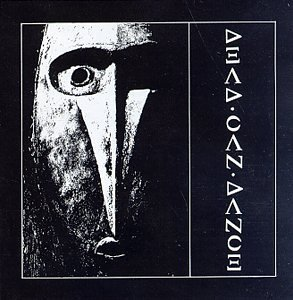
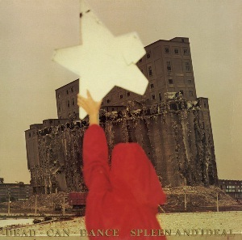
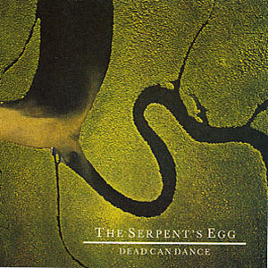
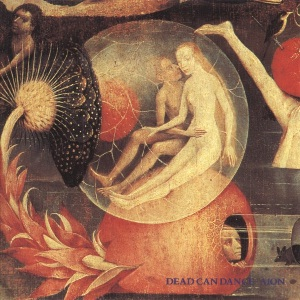
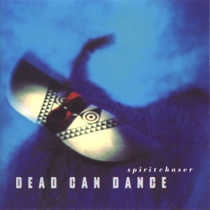
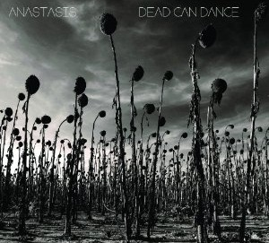

Discograpy
Dead Can Dance

The album, according to the sleeve notes, was recorded at "Vineyard".
The musicians who performed on the album were Brendan Perry, Lisa Gerrard, Paul Erikson, James Pinker, Scott Rodger and Peter Ulrich. Erikson returned to Australia and was replaced by Rodger.
The instrumentation consisted of guitars, bass guitar and drums, with added percussion and the very distinct sound of the yangqin, as played by Gerrard.
Spleen and ideal

The band's official website stated that the album title was taken "from 19th Century symbolist ideals". The title is directly taken from "Spleen et Idéal", a collection of poems by French poet Charles Baudelaire which form a section of his magnum opus Les Fleurs du mal.
Discussing the album's musical style, AllMusic commented that with Spleen and Ideal, Dead Can Dance "fully took the plunge into the heady mix of musical traditions that would come to define its sound and style for the remainder of its career.
Within the Realm of a Dying Sun

Vocals from "Dawn of the Iconoclast" were sampled by The Future Sound of London for their 1991 single "Papua New Guinea". American pop singer Fergie later also sampled "Dawn of the Iconoclast" for her song "Hungry" featuring Rick Ross, featured on her 2017 album, Double Dutchess. The song interpolated the chant with hip-hop beats and vocals from both artists.
"Xavier" has been covered by British gothic metal band Paradise Lost. This cover is available on the Limited Edition of their 2002 album Symbol of Life.
Serpent egg

The album was the last produced while Brendan Perry and Lisa Gerrard were a romantic couple. A majority of the album was recorded in a multi-storey apartment block in the Isle of Dogs, London.
Perry discussed the album's title: "In a lot of aerial photographs of the Earth, if you look upon it as a giant organism—a macrocosmos—you can see that the nature of the life force, water, travels in a serpentine way"
Aion

Aion is the fifth studio album by Dead Can Dance, released on 11 June 1990 by 4AD. The first album Lisa Gerrard and Brendan Perry wrote after the end of their romantic partnership, it was recorded at Perry's new estate, Quivvy Church in Ireland, and at Woodbine Street Recording Studios in Leamington Spa.
The album cover shows a detail from the Dutch painter Hieronymus Bosch's triptych The Garden of Earthly Delights (specifically, its central "Earth" panel).
Into the labyrinth

Into the Labyrinth is the sixth studio album by Dead Can Dance, the duo of Lisa Gerrard and Brendan Perry. Released on 13 September 1993 by 4AD, it marked a strong shift from their previous albums, putting ethnic music influences at the forefront, as would be the case in the later albums. It was their first album completed on their own without the aid of guest musicians, and their first album to have a major-label release in the US, thanks to a distribution deal that 4AD had with Warner Bros. Records. It featured the single "The Ubiquitous Mr Lovegrove". Into the Labyrinth was a major success, selling more than 500,000 copies worldwide.
Spiritchaser

Spiritchaser is the seventh studio album by Dead Can Dance, and would prove to be the last before the duo reunited fourteen years later for Anastasis. It expands on its exploration of world music, and like Into the Labyrinth, was recorded at Quivvy Church, Perry's personal studio in Ireland.
The album was dedicated to Lisa Gerrard's deceased brother, Mark Gerrard.
Anastasis

Anastasis is a 2012 studio album by the British-Australian band Dead Can Dance.[11] It is the eighth studio album by the band and the first after Brendan Perry and Lisa Gerrard disbanded in 1998. It was officially released on 13 August 2012 by PIAS Recordings, 16 years after the group's last album, Spiritchaser.[12][13][14][15] It is also the band's first album since it left 4AD Records. "Anastasis" is the Greek word for "resurrection".
To date, Anastasis sold over 150,000 copies worldwide.
Dionysus
Dionysus is the ninth studio album by the British-Australian band Dead Can Dance, officially released on 2 November 2018 by PIAS Recordings, six years after the group's last album, Anastasis.[6][7] Dionysus is the ancient Greek god of wine.